가스기사 (2007-08-05 기출문제)
1과목: 가스유체역학
1. 난류에서 전단응력(Shear Stress) τt를 다음 식으로 나타낼 때 η는 무엇을 나타내는가? (단,
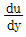
는 속도구배를 나타낸다.)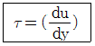
- 절대점도
- 비교점도
- 에디점도
- 중력점도
(정답률: 알수없음)

2. 비중이 0.8인 액체의 절대압력이 2.0㎏f/cm2일 때 이것을 두(head)로 구하면 몇 m인가?
- 1.6
- 2.5
- 16
- 25
(정답률: 17%)
3. 유동에 관한 등엔트로피의 흐름에서 에너지에 대한 미분방정식에 해당하는 것은? (단, 압력 은 O, 속도는 V, 밀도는 ρ, 단면적은 A로 나타낸다.)
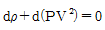
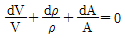
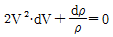
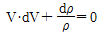
(정답률: 25%)
4. 내경 0.⑤26m인 철관 내를 점도가 0.01 ㎏/m·s이고 밀도가 1200㎏/m3인 액체가 1.16m/s의 평균속도로 흐를 때 Reynolds 수는 약 얼마인가?
- 36.61
- 3661
- 732.2
- 7322
(정답률: 알수없음)
5. 일반적으로 경계층은 유체속도가 자유흐름속도 Vmax의 몇 % 이하가 되는 영역을 뜻하는가?
- 50
- 80
- 90
- 99
(정답률: 알수없음)
6. 1차원의 유동을 하는 유동장 내의 한 점 에서 계속적으로 음파를 발산할 때에 대한 설명으로 옳지 않는 것은?
- 초음속으로 음파를 발산하면 Mach cone 외부에서는 이 소리를 들을 수 없다.
- 초음속으로 음파를 발산하면 Mach cone 내부에서는 이 소리를 들을 수 없다.
- 아음속일 경우 음파는 모든 방향으로 전파해 나간다.
- 아음속일 경우 정역(zone of silence)만 존재할 수 있다.
(정답률: 40%)
7. 내경이 40㎝, 길이가 500m인 관에 평균 속도가 1.5m/s로 물이 흐르고 있을 때 Darcy식을 사용하여 마찰손실 수두를 구하면 약 몇 m인가? (단, Darcy 마찰계수 f는 0.0422이다.)
- 4.2
- 6.1
- 12.3
- 24.2
(정답률: 알수없음)
8. 펌프의 흡입압이 유체의 증기압보다 낮은 경우, 유체가 vapor pocket을 형성하고 그 결과 로 pumping 이 중단되는 현상을 무엇이라고 하는가?
- cavitation
- water hammer
- shock head loss
- air binding
(정답률: 60%)
9. 역류를 방지하고 유체를 한 방향으로 수송시킬 때 사용하는 밸브는?
- Check Valve
- Stop Valve
- Gate Valve
- Glove Valve
(정답률: 70%)
10. 그림과 같이 물이 흐르는 관에 U자 수은 관을 설치하고, A지점과 B지점 사이의 수은 높이 차(h)를 측정하였더니 0.7m 였다. 이때 A점과 B점 사이의 압력차는 약 몇 kPa인가? (단, 수은의 비중은 13.6이다.)
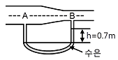
- 8.64
- 9.33
- 86.49
- 93.3
(정답률: 알수없음)
11. 그림과 같이 하단의 물과 상단의 기름 경계면 까지 높이가 5m이고, 이 경계면에서 대 기와의 경계면까지 높이가 5m일 때 출구에서의 유속 V는 약 몇 m/s인가? (단, 기름의 비중 S는 0.9이다.)
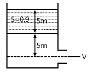
- 13.65
- 14.65
- 15.65
- 16.65
(정답률: 50%)
12. 동점성계수가(2.0st) 밀도가 880㎏/m3인 유체가 있다. 이 유체의 점성계수는 약 몇 Pa·s인가?
- 0.18
- 0.36
- 0.44
- 0.88
(정답률: 알수없음)
13. 아음속 유동에서 관지름의 변화에 의해서 생기는 손실에 대한 설명 중 틀린 것은?
- 급격한 팽창에서는 작은 관에서보다 큰 관에서의 유속이 작다.
- 급격한 팽창에서는 유체가 확대부분 근처에서 혼합되어 소용돌이를 이룬다.
- 급격한 확대나 축소에서 흐름의 충돌과 이때 생기는 소용돌이 때문에 손실이 발생한다.
- 급격한 축소에서는 흐름이 모두 축방향과 평행한 방향에서 관으로 들어온다.
(정답률: 알수없음)
14. 다음 중 운동량의 단위를 옳게 나타낸 것은?
- m/s
- ㎏·m/s
- N
- J
(정답률: 30%)
15. Newton의 점성법칙과 가장 관련 있는 것으로만 나열된 것은?
- 점성계수, 속도, 압력
- 압력, 전단응력, 점성계수
- 전단응력, 점성계수, 속도기울기
- 점성계수, 온도, 속도기울기
(정답률: 알수없음)
16. 다음 중 정적비열의 정의에 해당하는 것은? (단, T는 온도, U는 내부 에너지, h는 엔탈피, V는 체적을 나타낸다.)
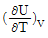
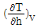
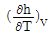
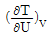
(정답률: 알수없음)
17. 분류에 수직으로 놓여진 평판이 분류와 같은 방향으로 U의 속도로 움직일 때 분류가 V의 속도로 평판에 충돌한다면 평판에 작용하는 힘은 얼마인가? (단, ρ는 유체밀도, A는 분류의 면적이고, V＞U이다.)
- ρA(V-U)2
- ρA(V＋U)2
- ρA(V-U)
- ρA(V＋U)
(정답률: 50%)
18. 개수로 유동(open channel flow)에 관한 설명으로 옳지 않은 것은?
- 수력구배선은 자유표면과 일치한다.
- 에너지선은 수면위로 속도수두만큼 위에이다.
- 수평선과 에너지선의 차이가 손실 수두이다.
- 개수로에서 바닥면의 압력은 항상 일정하다.
(정답률: 알수없음)
19. 25℃의 완전기체를 등엔트로피 과정으로 압력을 2배로 압축할 때, 압축 후 온도는 약 몇 ℃인가? (단, 정압비열은 0.20J/g℃이고, 정적비열은 0.15J/g℃이다.)
- 36
- 42
- 81
- 90
(정답률: 30%)
20. 다음 중 동점성계수를 나타내는 것이 아닌 것은? (단, μ는 점성계수, ρ는 밀도, F는 힘의 차원, T는 시간의 차원, L은 길이의 차원을 나타낸다.)
- μ/ρ
- stokes
- cm2/s
- FTL-2
(정답률: 알수없음)
2과목: 연소공학
21. 카르노사이클에서 열량의 흡수는 어느 과정에서 이루어지는가?
- 단열압축
- 등온압축
- 단열팽창
- 등온팽창
(정답률: 64%)
22. 완전가스에서 "PVK＝일정"의 식이 적용되는 과정은? (단, K는 비열비이다.)
- 등온과정
- 등압과정
- 등적과정
- 단열과정
(정답률: 28%)
23. 어떤 기관의 출력은 100kW이며 매 시간당 30㎏의 연료를 소모한다. 연료의 발열량이 8000kcal/㎏이라면 이 기관의 열효율은 얼마인가?
- 0.16
- 0.36
- 0.69
- 0.91
(정답률: 60%)
24. 어떤 연료를 분석한 결과 중량 %로 탄 소 75%, 수소 15%, 산소 8%, 황 2%이었다. 이 연료의 완전연소에 소요되는 이론산소량은 약 몇 ㎏-O2/㎏-연료인가?
- 1.96
- 2.45
- 3.14
- 4.78
(정답률: 알수없음)
25. 공기비가 클 경우 공기비가 연소에 미치는 영향에 대한 설명으로 가장 거리가 먼 것은?
- 연소실 내의 온도가 상승한다.
- 연소가스 중 NO2의 함량이 증가한다.
- 저온부식의 우려가 높아진다.
- 배기가스에 의한 열손실이 증대한다.
(정답률: 36%)
26. 예혼합연소의 특징에 대한 설명으로 옳은 것은?
- 로(爐)의 체적이 커야 한다.
- 화염대에 해당하는 두께는 10~100㎜ 정도로 두껍다.
- 연소실 부하율을 높게 얻을 수 있다.
- 역화의 위험성이 없다.
(정답률: 29%)
27. 비중이 0.75인 휘발유 (C8H18) 1ℓ를 완전연소시키는데 필요한 이론 산소량은 약 몇 ℓ인가?
- 1510
- 1842
- 2486
- 2814
(정답률: 50%)
28. 다음 중 진발열량(kcal/Nm3)이 가장 큰 기체 연료는?
- CH4
- C3H8
- H2
- CO
(정답률: 50%)
29. 액체연료의 일반적인 연소형태로서 가장 거리가 먼 것은?
- 액면연소
- 확산연소
- 증발연소
- 분무연소
(정답률: 알수없음)
30. 체적 300ℓ의 탱크 속에 습증기 58㎏이 들어있다. 350℃일 때 증기의 건도는 얼마인가? (단, 350℃ 온도 기준 포화 증기표애서 V'＝1.7468×10-3m3/㎏, V"＝8.811×10-3m3/㎏이다.)
- 0.485
- 0.585
- 0.693
- 0.793
(정답률: 알수없음)
31. 가스의 폭발등급은 안전간격에 따라 분류한다. 다음 가스 중 안전간격이 넓은 것부터 옳게 나열된 것은?
- 수소＞에틸렌＞프로판
- 에틸렌＞수소＞프로판
- 수소＞프로판＞에틸렌
- 프로판＞에틸렌＞수소
(정답률: 65%)
32. 옥탄(g)의 연소 엔탈피는 반응물 중의 수증기가 응축되어 물이 되었을 때 25℃에서 -48220kJ/㎏이다. 이 상태에서 옥탄(g)의 저위발열량은 약 몇 kJ/㎏인가? (단, 25℃ 물의 증발 엔탈피[hfg])는 2441.8kJ/㎏이다.)
- 40750
- 42320
- 44750
- 45778
(정답률: 10%)
33. 4㎏의 공기가 팽창하여 그 체적이 3배 가 되었다. 팽창하는 과정 중의 온도는 50℃로 일정하게 유지되었다면 이 시스템이 한 일은 약 몇 kJ인가? (단, 공기의 기체상수는 0.287kJ/㎏·K이다.)
- 371
- 408
- 471
- 508
(정답률: 알수없음)
34. 압력이 0.1MPa, 체적이 3m3인 273.15K의 공기가 이상적으로 단열압축되어 그 체적이 1/3로 감소되었다. 엔탈피 변화량은 약 몇 kJ인가? (단, 공기의 기체상수는 0.287kJ/㎏·K, 비열비는 1.4이다.)
- 560
- 570
- 580
- 590
(정답률: 알수없음)
35. 메탄을 이론공기로 연소시킬 때 생성물 중 질소의 분압은 약 몇 MPa인가? (단, 메탄과 공기는 0.1MPa, 25℃에서 공급되는 생성물의 압력은 0.1MPa이고, H2O는 기체상태로 존재한다.)
- 0.0815
- 0.0493
- 0.0603
- 0.0715
(정답률: 20%)
36. 열효율이 압축비만으로 인하여 결정되며 등적사이클이라고도 하는 사이클은 어느 것인가? (단, 비열비는 일정하다.)
- 에릭슨 사이클
- 오토 사이클
- 스틸링 사이클
- 브레이튼 사이클
(정답률: 알수없음)
37. 냉동 사이클의 이상적인 사이클은 어느 것인가?
- 역카르노 사이클
- 카르노 사이클
- 스틸링 사이클
- 브레이튼 사이클
(정답률: 73%)
38. 용기 내부에서 가연성가스의 폭발이 발생할 경우 그 용기가 폭발압력에 견디고 접합면 등을 통하여 외부의 가연성가스에 인화되지 않도록 한 방폭구조의 표시 방법은?
- e
- p
- o
- d
(정답률: 알수없음)
39. 이상기체의 성질에 대한 설명 중 틀린 것은?
- 보일·샤를의 법칙을 만족한다.
- 내부에너지는 온도에 무관하며 압력에 의해서만 결정된다.
- 아보가드로의 법칙을 따른다.
- 비열비는 온도에 관계없이 일정하다.
(정답률: 알수없음)
40. 연소범위에 대한 일반적인 설명 중 틀린 것은?
- 산소 농도가 증가하면 연소범위는 넓어진다.
- 온도가 올라가면 연소범위는 넓어진다.
- 압력이 높아지면 연소범위는 넓어진다.
- 불활성가스의 양이 증가하면 연소범위는 넓어진다.
(정답률: 알수없음)
3과목: 가스설비
41. 아세틸렌에 대한 설명 중 틀린 것은?
- 반응성이 대단히 크고 분해 시 발열반응을 한다.
- 탄화칼슘에 물을 가하여 만든다.
- 액체 아세틸렌보다 고체 아세틸렌이 안정하다.
- 폭발범위가 넓은 가연성 기체이다.
(정답률: 60%)
42. 암모니아 취급에 대한 설명 중 틀린 것은?
- 암모니아의 건조제로 진한 황산을 사용한다.
- 진한염산과 접촉시키면 흰 연기가 나므로 암모니아 누출을 검출할 수 있다.
- 고온, 고압이 되면 질화작용과 수소취성을 동시에 일으킨다.
- Cu 및 Al 합금과는 부식성을 가지므로 철합금을 사용한다.
(정답률: 알수없음)
43. LPG(액체) 1㎏이 기화했을 때 표준상태에서의 체적은 약 몇 ℓ인가? (단, LPG의 조성은 프로판 80wt%, 부탄 20wt%이다.)
- 387
- 485
- 584
- 783
(정답률: 알수없음)
44. 정압기의 특성 중 유량과 2차 압력과의 관계를 나타내는 것은?
- 정특성
- 유량특성
- 동특성
- 작동 최소차압
(정답률: 70%)
45. 왕복형 압축기의 특징에 대한 설명으로 옳은 것은?
- 쉽게 고압이 얻어진다.
- 압축효율이 낮다.
- 접촉부가 적어 보수가 쉽다.
- 기초 설치 면적이 작다.
(정답률: 알수없음)
46. 다기능 가스안전 계량기(마이콤 메타)의 기능이 아닌 것은?
- 합계유량 차단기능
- 연속사용시간 차단기능
- 압력저하 차단기능
- 과열방지 차단기능
(정답률: 알수없음)
47. 온도 T2 저온체에서 흡수한 열량을 q2, 온도 T1인 고온체에서 버린 열량을 q1이라할 때 냉동기의 성능계수는?
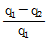
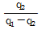
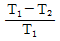
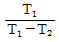
(정답률: 50%)
48. 다음 중 가스 액화사이클이 아닌 것은?
- 린데 사이클
- 클라우드 사이클
- 필립스 사이클
- 오토 사이클
(정답률: 59%)
49. 메탄가스가 액화되는 조건으로 가장 옳은 것은?
- 임계온도 이하에서 가압한다.
- 절대온도 이하에서 가압한다.
- 섭씨 0℃ 이하에서 가압한다.
- 온도에 관계없이 가압한다.
(정답률: 알수없음)
50. 용량 500ℓ인 액산탱크에 액산을 넣어 방출밸브를 개방하여 12시간 방치하였더니 탱크 내의 액산이 5㎏ 방출되었다. 이때 액산의 증발 잠열은 40kcal/㎏이라 하면 1시간당 탱크에 침입하는 열량은 약 몇 kcal인가?
- 16.7
- 18.4
- 20.5
- 22.4
(정답률: 30%)
51. 그림에서 보여주는 고압조인트(joint)의 명칭은?
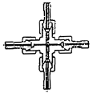
- 영구 조인트
- 분해 조인트
- 다방 조인트
- 신축 조인트
(정답률: 73%)
52. 압축기와 펌프에서 공통으로 일어날 수 있는 현상으로 가장 옳은 것은?
- 캐비테이션
- 서어징
- 워터햄머링
- 베이퍼록
(정답률: 알수없음)
53. 신규 용기에 대하여 팽창측정시험을 하였더니 전증가량이 100mℓ이었다. 이 용기가 검사에 합격하려면 항구증가량은 몇 mℓ 이하이어야 하는가?
- 5
- 10
- 15
- 20
(정답률: 알수없음)
54. 발열량이 5000kcal/Nm3, 비중이 0.61, 공급표준압력이 100㎜H2O인 가스에서 발열량 11000kcal/Nm3, 비중 0.66, 공급표준압력이 200 ㎜H2O인 LNG로 가스를 변경할 경우 노즐 변경율은 얼마인가?
- 0.49
- 0.58
- 0.71
- 0.82
(정답률: 알수없음)
55. 관의 신축량에 대한 설명으로 옳은 것은?
- 신축걍은 관의 길이, 열팽창계수, 온도차에 비례한다.
- 신축량은 관의 열팽창계수에 비례하고 길이와 온도차에 반비례한다.
- 신축량은 관의 길이, 열팽창계수, 온도차에 반비례한다.
- 신축량은 관의 열팽창계수에는 반비례하고 길이와 온도차에 비례한다.
(정답률: 70%)
56. 다음 [보기]는 파일럿식과 직동식 정압기의 특성에 대한 것이다. 직동식 정압기의 특성을 모두 고른 것은?
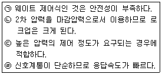
- ㉠, ㉡
- ㉡, ㉢
- ㉡, ㉣
- ㉢, ㉣
(정답률: 17%)
57. 천연가스에 첨가하는 부취제의 성분으로 적합하지 않은 것은?
- THT(tetra hydrothiophene)
- TBM(tertiary butyl mercaptan)
- DMS(dimethyl sulfide)
- DMDS(dimethyl disulfide)
(정답률: 64%)
58. LNG 저장탱크에서 사용되는 잠액식 펌프의 윤활 및 냉각을 위해 주로 사용되는 것은?
- 물
- 그리스
- LNG
- 황산
(정답률: 31%)
59. 수소가스 공급 시 용기의 충전구에 사용하는 패킹재료로서 가장 많이 사용되는 것은?
- 석면
- 고무
- 화이버
- 금속평형 가스켓
(정답률: 55%)
60. 가스제조공정에서 원료의 송입법에 의한 분류에 해당 되지 않는 것은?
- 외열식
- 연속식
- 배치식
- Cyclic식
(정답률: 67%)
4과목: 가스안전관리
61. 고압가스 설비의 고압배관이 상용압력 0.5MPa일 때 기밀시험 압력의 기준은?
- 0.5MPa 이상
- 0.7MPa 이상
- 0.75MPa 이상
- 1.0MPa 이상
(정답률: 37%)
62. 저장탱크에 가스를 충전할 때 저장탱크 내용적의 90%를 넘지 않도록 충전해야 하는 이유는?
- 액의 요동을 방지하기 위하여
- 충격을 흡수하기 위하여
- 온도에 따른 액팽창이 현저히 크므로 안전공간을 유지하기 위하여
- 추가로 충전할 때를 대비하기 위하여
(정답률: 알수없음)
63. 내용적 500ℓ 미만인 용기의 고압가스 종류에 따른 내압시험 압력의 기준으로 옳은 것은?
- 액화프로판은 3.0MPa이다.
- 액화프레온 22는 35MPa이다.
- 액화암모니아는 3.7MPa이다.
- 액화부탄은 0.9MPa이다.
(정답률: 알수없음)
64. 정전기 대책을 설명한 것 중 틀린 것은?
- 접지에 의한 방법
- 공기를 이온화 하는 방법
- 작업실내 습도를 75% 이상 유지하는 방법
- 접촉 전위차가 큰 물질을 사용하는 방법
(정답률: 알수없음)
65. 이동식 부탄 연소기(220g 납붙임용기 삽입형)를 사용하는 음식점에서 부탄연소기의 본 체보다 큰 주물불판을 사용하여 30~40분 동안 고기를 굽다가 사고가 일어났다. 원인은 무엇이라고 추정되는가?
- 가스누출
- 납붙임용기의 불량
- 납붙임용기의 오장착
- 용기 내부의 압력 급상승
(정답률: 알수없음)
66. 액화석유가스를 용기 저장탱크 또는 제조설비에 이·충전 시 정전기 제거조치에 관한 내용 중 틀린 것은?
- 접지저항 총합이 100Ω 이하의 것은 정전기 제거 조치를 하지 않아도 된다.
- 피뢰설비가 설치된 것의 접지저항값이 50Ω 이하의 것은 정전기 제거조치를 하지 않아도 된다.
- 접지 접속선 단면적은 5.5mm2 이상의 것을 사용해야 한다.
- 탱크로리 및 충전에 사용하는 배관은 반드시 충전 전에 접지해야 한다.
(정답률: 알수없음)
67. 다음 [보기]에서 임계온도가 0℃에서 40℃ 사이인 것끼리만 나열된 것은?
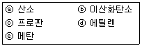
- ⓐ, ⓑ
- ⓑ, ⓒ
- ⓑ, ⓓ
- ⓒ, ⓔ
(정답률: 알수없음)
68. 액화산소 저장탱크의 저장능력이 2000m3일 때 방류둑의 용량은?
- 1200m3 이상
- 1400m3 이상
- 18000m3 이상
- 2000m3 이상
(정답률: 알수없음)
69. 200km를 초과하는 거리까지 차량에 고 정된 탱크에 의하여 고압가스 운반 시 운반책임자 를 동승시키지 않아도 되는 경우는? (단, 독성가스는 허용농도가 100만분의 1 이상이다.)
- 액화가스 중 질량이 500㎏인 독성가스
- 액화가스 중 질량이 6000㎏인 독성가스
- 압축가스 중 용적이 500m3인 독성가스
- 압축가스 중 용적이 1000m3인 산소
(정답률: 알수없음)
70. 일정 규정 이상의 도시가스 특정사용 설에는 가스누출자동차단장치를 설치하여야 한다. 가스누출자동 차단장치의 설치기준에 대한 설명 중 틀린 것은?
- 공기보다 가벼운 경우에는 검지부의 설치 위치는 천정으로부터 검지부 하단까지의 거리가 30㎝ 이하가 되도록 한다.
- 공기보다 무거운 경우에는 검지부 상단이 바닥면으로부터 30㎝ 이하가 되도록 한다.
- 제어부는 가능한 한 연소기로부터 멀리 떨어진 위치로서 실외에서 조작하기가 용이한 위치로 한다.
- 연소기의 폐가스에 접촉하기 쉬운 곳에는 검지부를 설치할 수 없다.
(정답률: 40%)
71. 아세틸렌의 폭발범위는 2.5~81%이다. 이때 위험도는 얼마 인가?
- 12.5
- 16.7
- 25.6
- 31.4
(정답률: 42%)
72. 고압가스 운반방법에 대한 설명 중 틀린 것은?
- 용기적재함을 설치한 오토바이에 20㎏ LPG 용기 1개를 실어 운반하였다.
- 염소용기와 수소용기를 동일차량에 적재하여 운반하였다.
- 허용농도가 100만분의 1미만인 독성가스 충전용기를 용기승하차용 리프트가 장착된 전용차량으로 운반 하였다.
- 프로판가스의 산소를 동일차량에서 용기밸브가 마주보지 말도록 조치한 후 운반하였다.
(정답률: 65%)
73. 다음 중 방류둑을 설치하여야 하는 시설은?
- 저장능력 5000톤의 액화석유가스 지하저장탱크
- 저장능력 500톤의 산소충전소 지상형 저장탱크
- 암모니아를 저장하는 지상층 10톤 저장탱크
- 프로판을 저장하는 지상형 300톤 저장탱크
(정답률: 39%)
74. 고압가스제조설비의 비상전력을 반드시 갖추어야 할 설비가 아닌 것은?
- 물분무장치
- 자동제어장치
- 벤트스택
- 긴급차단장치
(정답률: 54%)
75. 액화석유가스 저장탱크의 외벽에 화염 에 의하여 국부적으로 가열될 경우 탱크의 파열을 방지하기 위한 폭발방지제의 열전달매체 재료로서 가장 적당한 것은?
- 동
- 알루미늄
- 철
- 아연
(정답률: 알수없음)
76. 다음 용기 중 재검사시 내면 및 외면검사가 제외되는 용기는?
- LPG 용기
- 압축산소 용기
- 아세틸렌 용기
- 액화질소 용기
(정답률: 43%)
77. 용기가스 소비자에게 액화석유가스를 공급하고자 하는 가스공급자의 공급기준 중 틀린 것은?
- 용기가스 소비자에게 LPG를 공급할 경우 안전공급 계약을 체결한 우 안전공급계약에 의하여 공급한다.
- 가스공급자가 용기사스 소비자에게 LPG를 공급하고자 할 때는 공급설비를 자기의 부담으로 실시하고 관리한다.
- 가스공급자는 용기의 외면에 허가관청의 코드번호, LPG 충전사업자의 주소를 반드시 표시하여 공급한다.
- 가스사용자는 공급계약기간에 가스공급자가 안전점검, 기타 안전관리의무를 이행하지 않을 경우에는 계약을 해지할 수 있다.
(정답률: 17%)
78. 액화석유가스사용시설에 배관을 설치하는 방법 중 틀린 것은?
- 저장설비로부터 중간밸브까지의 배관은 강관, 동관, 호스 또는 금속플랙시블호스를 설치하여야 한다.
- 저장능력이 250㎏ 이상인 경우에는 고압배관에 이상 압력 상승 시 압력을 방출할 수 있는 안전장치를 설치하여야 한다.
- 건축물의 벽을 관통하는 부분의 배관에는 보호관 및 부식방지 피복을 하여야 한다.
- 용접이음매를 제외한 배관이음부와 전기개폐기와의 거리는 60㎝ 이상의 거리를 유지하여 설치하여야 한다.
(정답률: 25%)
79. 가연성가스가 폭발할 위험이 있는 농도 에 도달할 우려가 잇는 장소로서 "2종장소"에 해당되지 않는 것은?
- 상용의 상태에서 가연성가스의 농도가 연속해서 폭발하한계 이상으로 되는 장소
- 밀폐된 용기가 그 용기의 사고로 인해 파손될 경우에만 가스가 누출할 위험이 있는 장소
- 환기장치에 이상이나 사고가 발생한 경우에는 가연성 가스가 체류하여 위험하게 될 우려가 있는 장소
- 1종 장소의 주변에서 위험한 농도의 가연성가스가 종종 침입할 우려가 있는 장소
(정답률: 알수없음)
80. 액화석유가스의 충전, 집단공급, 저장 및 사용시설의 사용개시 전 점검사항의 항목이 아닌 것은?
- 제조설비 등에 있는 내용물의 상황
- 계기류의 기능 및 제어장치의 상태
- 개방하는 제조설비와 다른 제조설비와의 차단상황
- 긴급차단 및 긴급방출장치의 기능
(정답률: 알수없음)
5과목: 가스계측기기
81. 검지가스와 누출 확인 시험지가 옳게 연결된 것은?
- 포스겐 - 하리슨씨시약
- 할로겐 - 염화제일구리착염지
- CO - KI 전분지
- H2S - 초산벤지딘지
(정답률: 58%)
82. 다음 중 가스크로마토그래피의 주된 원리는?
- 흡착
- 증류
- 추출
- 결정화
(정답률: 80%)
83. 가스크로마토그래피 분석기에서 인과 황화합물에 대하여 선택적으로 검출하는 데 주로 이용되는 검출기는?
- TCD
- FID
- ECD
- FPD
(정답률: 30%)
84. 가스미터 선정 시 고려 사항으로 옳지 않은 것은?
- 가스의 최대사용유량에 적합한 계량능력의 것을 선택한다.
- 가스의 기밀성이 좋고 내구성이 큰 것을 선택한다.
- 사용 시 기차가 커서 정확하게 계량할 수 있는 것을 선택한다.
- 내열성, 냉압성이 좋고 유지관리가 용이한 것을 선택한다.
(정답률: 70%)
85. 0℃에서 저항이 120Ω이고 저항온도 계수가 0.025인 저항온도계로 어떤 로안에 삽입 하였을 때 저항이 180Ω이 되었다면 로안의 온도는 약 몇 ℃인가?
- 125
- 200
- 320
- 534
(정답률: 29%)
86. 부르돈관(Bourdon tube)에 대한 설명 중 틀린 것은?
- C형, 와권형, 나선형, 버튼형 등이 있다.
- 막식 압력계보다 고압측정이 가능하다.
- 곡관에 압력이 가해지면 곡률반경이 증대되는 것을 이용한 것이다.
- 계기 하나로 2공정의 압력차 측정이 가능하다.
(정답률: 알수없음)
87. 가스미터는 동시사용율을 고려하여 시 간당 최대사용량을 통과시킬 수 있도록 배관지름 과 가스미터의 크기를 적절하게 선택하여야 한다. 다음 중 최대 통과량이 가장 큰 가스미터기를 나타내는 것은?
- N형 2호
- M형 3호
- B형 5호
- T형 7호
(정답률: 알수없음)
88. 써미스터 등을 사용하고, 저온도에서 중온도범위 계측에 정도가 우수한 온도계는?
- 열전대 온도계
- 전기저항식 온도계
- 바이메탈 온도계
- 압력식 온도계
(정답률: 알수없음)
89. 습식가스미터는 어떤 형태에 해당하는가?
- 오벌형
- 드럼형
- 다이아프램형
- 로터리 피스톤형
(정답률: 64%)
90. 독립내기형 다이아프램식 가스미터를 나타내는 기호는?
- C
- M
- S
- P
(정답률: 알수없음)
91. 다음 [보기]의 가스미터 중 실측식으로만 짝지어진 것은?
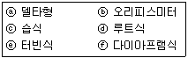
- ⓒ, ⓔ, ⓕ
- ⓐ, ⓓ, ⓕ
- ⓒ, ⓓ, ⓕ
- ⓐ, ⓑ, ⓔ
(정답률: 알수없음)
92. 계측기 고유오차의 최대허용한도를 무엇이라고 하는가?
- 오차
- 공차
- 기차
- 편차
(정답률: 알수없음)
93. 다음 그림은 자동 제어계의 특성에 대 하여 나타낸 것이다. 그림 중 B는 입력신호의 변화에 대하여 출력신호의 변화가 즉시 따르지 않는 것을 나타내는 것으로 이를 무엇이라고 하는가?
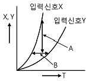
- 정오차
- 히스테리시스 오차
- 동오차
- 지연(遲延)
(정답률: 알수없음)
94. 다음 중 열전대 온도계의 종류가 아닌 것은?
- 백금 - 백금로듐
- 크로멜 - 알루멜
- 철 - 콘스탄탄
- 백금 - 알루멜
(정답률: 알수없음)
95. 연소분석법 중 탄화수소는 산화시키지 않고 H2 및 CO만을 분별적으로 완전 산화시키는 방법은?
- 폭발법
- 파라듐관 연소법
- 완만 연소법
- 헴펠법
(정답률: 50%)
96. 계측기기의 감도에 대한 설명 중 틀린 것은?
- 감도가 좋으면 측정시간이 길어지고 측정범위는 좁아진다.
- 계측기기가 측정량의 변화에 민감한 정도를 말한다.
- 측정량의 변화에 대한 지시량의 변화비율을 말한다.
- 측정결과에 대한 신뢰도를 나타내는 척도이다.
(정답률: 19%)
97. 아르키메데스의 원리를 이용한 액면 측정계기는?
- 플로우트 액면계
- 초음파식 액면계
- 정전용량식 액면계
- 방사선식 액면계
(정답률: 알수없음)
98. 온도가 21℃에서 상대습도 60%의 공기를 압력은 변화하지 않고 온도를 22⑤℃로 할 때, 공기의 상대습도는 약 얼마인가?
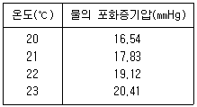
- 52.41%
- 53.63%
- 54.13%
- 55.95%
(정답률: 알수없음)
99. 가스크로마토그램에서 A, B 두 성분의 보유시간은 각각 1분 50초와 2분 23초이고 피이크 폭은 다같이 30초였다. 이 경우 분리도는 얼마인가?
- 0.5
- 1.0
- 1.5
- 2.0
(정답률: 55%)
100. 전자유량계의 특징에 대한 설명 중 틀린 것은?
- 압력손실이 전혀 없다.
- 적절한 라이닝 재질을 선정하면 슬러리나 부식성 액체의 측정이 용이하다.
- 응답이 매우 빠르다.
- 기체, 기름 등 도전성이 없는 유체의 측정에 적합하다.
(정답률: 알수없음)